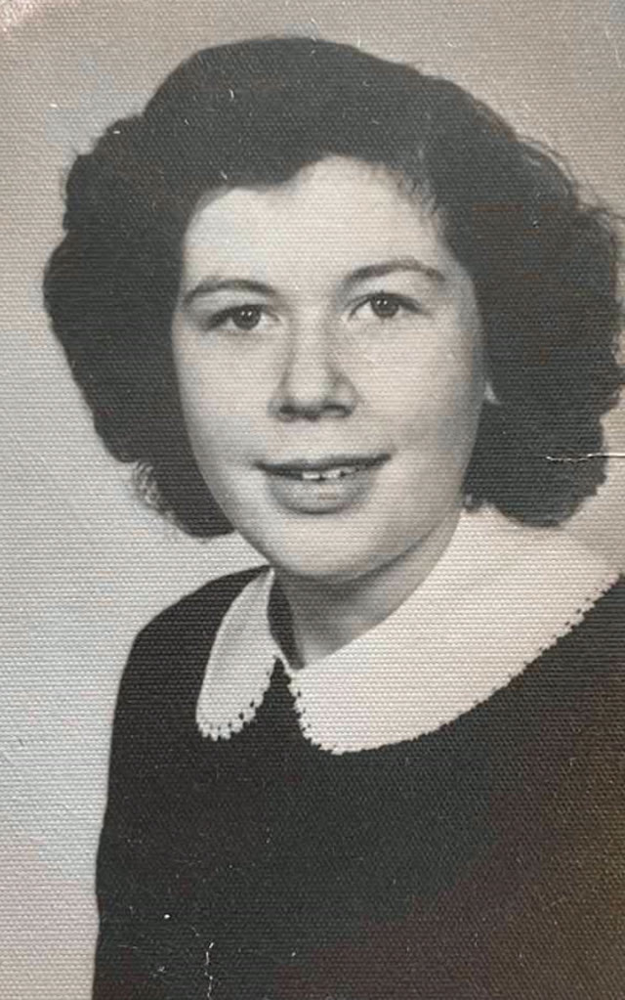
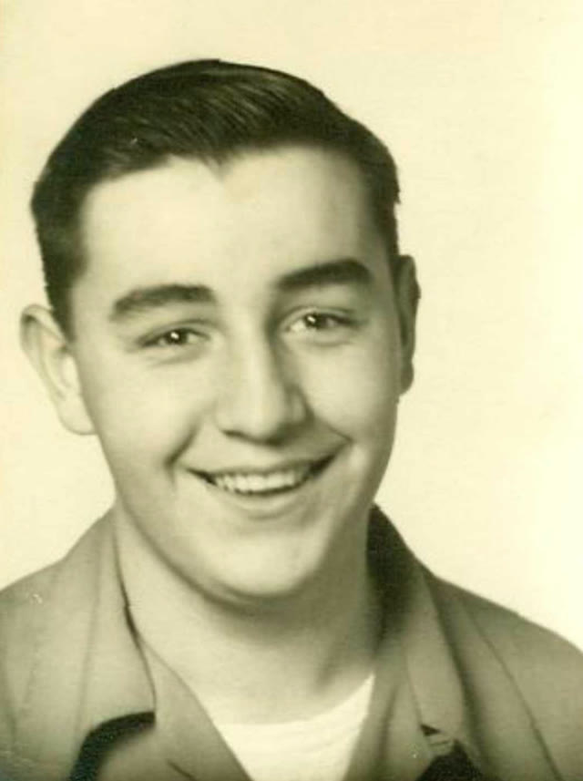
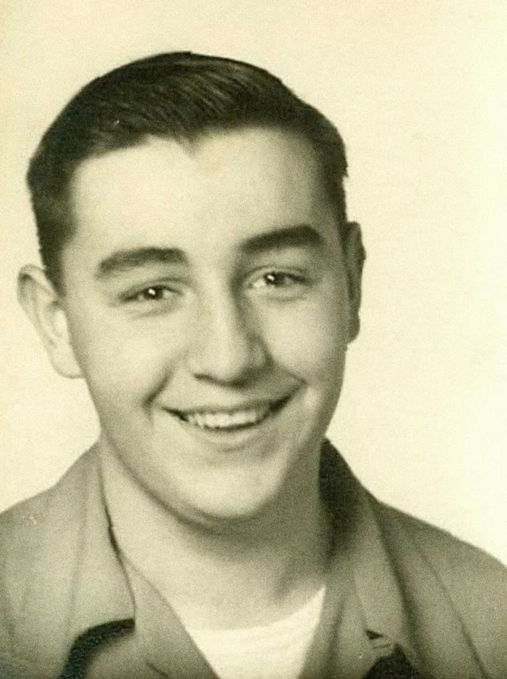
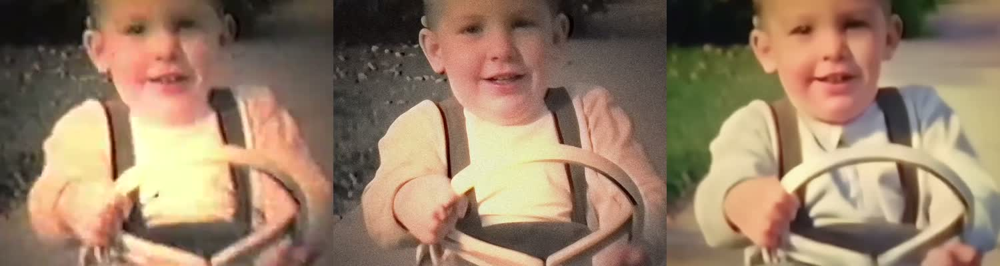

Mom and Dad's portraits and the family's 8mm home movies, surfacing one by one through a drifting sky on the bars of the song.
Tempo 117 BPMSong 4:58Sketch 0:43 · 21 barsMemories 4
The opening 21 bars, rendered locally: clouds, dissolves and film clean-upsketch 3
$0clouds, film clean-up and all three sketches: rendered on this PC
$4.00Runway tests today, 400 credits, as quoted
$0.50of that: both portraits upscaled, worth keeping
4memories in this sketch: two photographs, two home movies
The sheet · 4 memories
Each memory on its own bars.
Each memory dissolves in through the clouds, lingers, and dissolves out. The light swells a little on every downbeat. Parents first, then the family, then the first car. Neighbouring memories overlap by two bars, so one is still fading as the next arrives.
MEMORY SHEETPROJECT: First Breath · 4 MEMORIES · 16:9 · 117 BPM · BAR 2.05 s
Photos: family album. Film: the family's 8mm, from the YouTube transfers. Arrows: the move each memory makes.sketch 3 ✓
Runway tests · 400 credits
What Runway adds, and what it changes.
One short sample of each idea, set beside the original. For family faces, the test that matters is whether it still looks like them. Two keepers, one no for now, one maybe.
Magnific precision upscale · 25 credits each
Upscaling the portraits
keep
Four times the resolution, with the denoiser tuned for old photos. The paper texture and dust are calmed, and the faces are the same faces.

Mom · originalThe scan, 505 px wide, with a crease on the right.Mom · upscaledCleaner and sharper. Same smile, same gap in her teeth.

Dad · originalThe scan, 592 px wide.

Dad · upscaledCrisper hair and eyes, still his grin.
Next: the upscaled portraits replace the scans in the clouds.
Gen-4 Turbo image-to-video · 10 s · 50 credits each
Bringing the portraits to life
not like them
Started from the upscaled portraits with a motion-only prompt, the lesson from shot 29 of The Weight of Silence. The motion is gentle, but the faces change within the first second.
First frameWhat Runway was given.Dad · RunwayHis big grin closes into a half-smile, and the face slims. It reads as a different young man.Mom · RunwayCloser, but the face narrows and the smile is smoothed. The gap in her teeth is gone.
The person breathes softly, blinks once, and their smile slowly warms. A faint breeze stirs the hair. The camera stays still. Vintage black and white studio portrait.
Next: keep the photos still and give them motion we control (a slow push-in, depth parallax, a breath of light), so their faces stay exactly as they were. Runway animation stays off unless a stricter test passes the likeness check.
Same 5 seconds · the pedal car rolls up to the camera
The home movies: upscale or restyle
upscale
The original is the YouTube transfer with its frame edges trimmed. Magnific's creative upscaler ran at low creativity on the natural setting. Aleph was asked for a timeless hand-tinted look that keeps every person, face and movement the same.
OriginalSoft, warm and grainy. The face is blurred by the transfer.Upscaled · 105 creditsSharper eyes, smile and suspenders. It still looks like the same afternoon.Restyled · Aleph · 140 creditsLovely clean colour, but it invents details: the t-shirt becomes a collared shirt.

Close on the face at the same moment: original, upscaled, restyled.
A timeless hand-tinted home movie: soft natural pastel colors painted over warm film, gentle grain, golden afternoon light, clean and clear. Keep every person, face, pose and movement exactly as in the original.
Next: upscale only the film moments that make the final cut. It costs about 21 credits per second of film. Aleph is a maybe: wide shots without close faces, or as a reference look for our own local colour grade.
Enhance frame rate · 3 credits
Smoothing the film motion
retest
The plan was to remove the transfer's repeated frames and let Runway fill in the motion. The YouTube copies turned out to have no repeated frames to remove, so this test only slowed the clip. Nothing learned. It needs a different setup before it's worth trying again.
Where it goes next
From sketch to the whole song
More memoriesAbout 20 across the five minutes. Send more photos; the two films still hold the swing, the first birthday cake and Dad with the baby.
Photos that breatheLocal depth parallax and a slow push-in on the upscaled portraits. Movement, with every face exactly as it was.
Upscale the keepersOnce the film moments are chosen, upscale just those, priced up front before anything runs.
The song's shapeThe long opening stays slow and sparse. The bigger middle section, from 3:05, carries the busiest, happiest film.
A timeless gradeA warm, hand-tinted grade applied locally across everything, so photos and film feel like one album.
For the familyA full-length export to keep, with no branding.